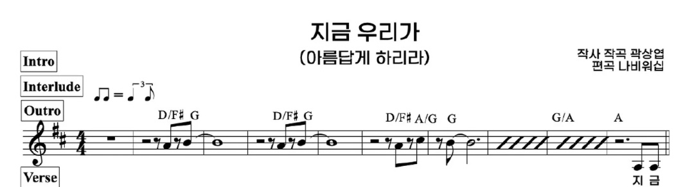
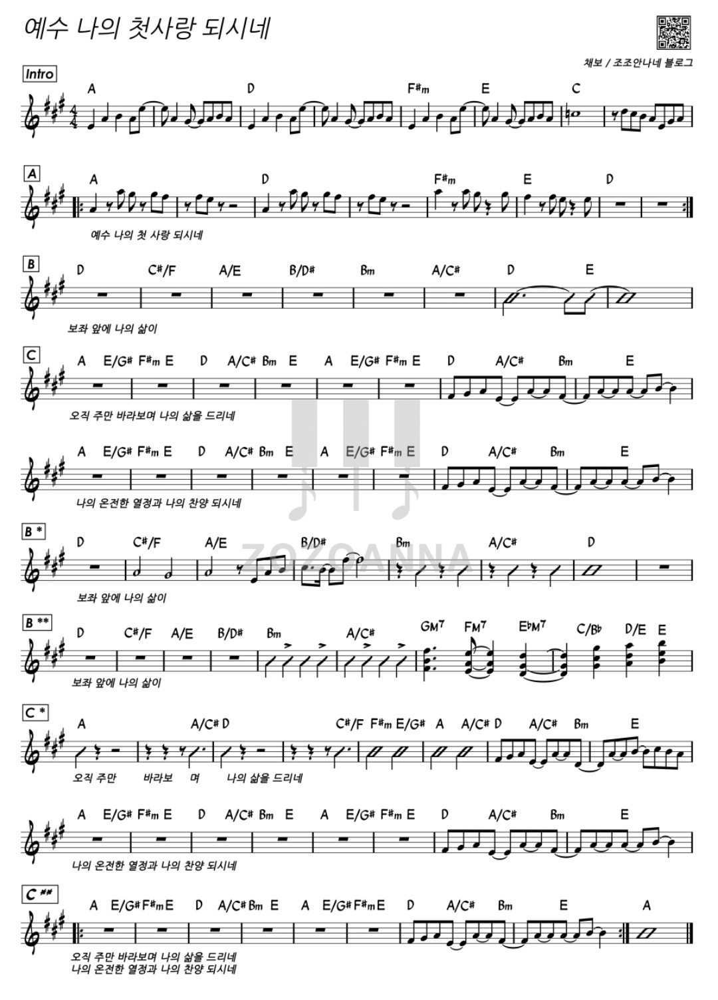
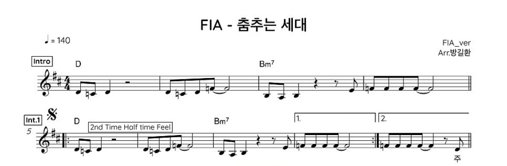
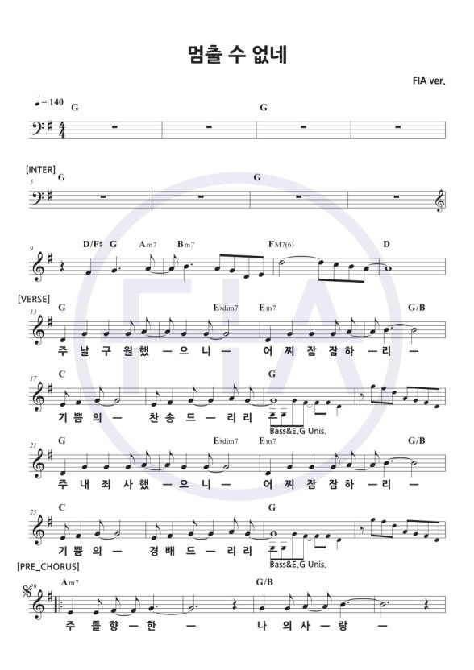

🎵 청장년교구 수련회 세션 가이드
2026-10-30 revised
🎹 세컨 건반 음색 세팅 요약 (KORG Krome EX)
A028 Synth Sweep Pad — 신비로운 분위기 연출 및 패드
B001 Synth Brass — 빠른 곡 일렉 기타 리프/뱅킹 대용
C005 Square Lead — 시그니처 대표 멜로디 및 리드
1. 지금 우리가 주님 안에 하나가 되어
▶ YouTubeIntro/Interlude 악보

Song Form
시작 멘트 – Intro – A – B – Inter (Intro 부분) – A – B × 3
합주 팁
- 8비트 탄탄함: 가볍지 않게 드럼과 베이스가 기준 박자를 단단하게 잡아줍니다.
- Inter 구간 코드: G/D 코드 진행 시 베이스가 D 음을 계속 깔아줄지, G 음으로 옮겨갈지 사전에 약속합니다.
메인 건반
- 8비트 리듬을 밀리지 않게 또박또박 쳐서 전체 박자를 이끕니다.
세컨 건반
B001 Synth Brass
B 파트와 리듬 쉼표 구간을 강한 브라스 소리로 찔러주어 일렉 기타의 빈자리를 단단히 메꿔줍니다.
드럼
- 8비트 기본 박자를 단단하게 치고, 멘트 끝난 후 Intro로 들어갈 때 돋보이게 심벌을 쳐서 신호를 줍니다.
베이스
- 드럼 킥 소리에 딱 맞춰서 8비트로 같이 찍어줍니다.
2. 예수 나의 첫사랑 되시네
▶ YouTubeIntro/Interlude 악보

Song Form
Intro(멘트) – A – A – B – C – A – A – B – C – Inter 4마디 – B – B – C(Break) – C
합주 팁
- 빠른 8비트 락 워십: 박자가 빨라지기 쉬우니 드럼이 템포가 달라지지 않게 꼭 잡아줍니다.
- C 파트 Break: 악기가 다 같이 동시에 딱 멈추는 타이밍을 완벽하게 맞춥니다.
메인 건반
- 8비트 옥타브 리프를 강한 터치로 신나게 칩니다.
세컨 건반
A028 Synth Sweep Pad
곡 시작부터 끝까지 음색 변경 없이 고정. Intro에서는 강하게 터치해 Sweep 효과음을 내고, 이후 파트에서는 꾹 눌러 패드로 풍성하게 채워줍니다.
드럼
- 신나는 8비트 락 패턴을 밀고 가고, Break 구간에서 소리를 깔끔하게 끊어줍니다.
베이스
- 8비트로 강하게 연주하며 드럼 킥과 1:1로 딱 붙어서 연주합니다.
3. 춤추는 세대
▶ YouTubeIntro/Interlude 악보

Song Form
Intro 베이스 솔로 8마디 – A – B – C – Inter 4마디 – A – B – C – C (연주만) – B – B – C – C – C – Outro
합주 팁
- Intro 8마디 베이스 솔로: 베이스 혼자 시작하므로 베이스의 템포와 톤이 매우 중요합니다.
- 마디 수 체크: C 파트 연주만 나오는 구간과 Outro 반복에서 마디 수(4마디/8마디)를 똑같이 세어야 합니다.
메인 건반
- 강한 코드 컴핑으로 전체 흥을 밑에서 받쳐줍니다.
세컨 건반
B001 Synth Brass
베이스 솔로 후 들어오는 시그니처 멜로디 및 B, C 파트에서 빵빵 터지는 브라스 리프를 확실하게 질러줍니다.
드럼
- 댄스 리듬 킥을 강하게 밟아주고, 마디가 바뀔 때 드럼 필인을 확실히 넣어줍니다.
베이스
- 이 곡의 리더. Intro 8마디 솔로 톤을 확실히 잡고, 멈추는 구간에서 소리를 잘 끊어줍니다.
4. 멈출 수 없네
▶ YouTubeIntro/Interlude 악보

Song Form
Intro – A – B2 – C – Inter 8마디 – A – B2 – C – Inter 4마디 – Bridge(D) × 2 – B1 – B2 – C – C – Inter 8마디 / Outro(화려한 피날레)
합주 팁
- Intro 및 Inter 대표 멜로디: 세컨 건반, 베이스, 기타가 다 함께 연주하는 라인을 완벽하게 맞춰야 합니다.
- 화려한 Outro 마무리: 마지막 마무리를 다 같이 크게 터뜨렸다가 한순간에 칼같이 맞춰 끝냅니다.
메인 건반
- 16비트로 쪼개는 팝 피아노 리듬을 끊어지지 않게 쳐줍니다.
세컨 건반
C005 Square Lead
Intro, Inter, Bridge 구간에서 확실한 리드 음색으로 대표 멜로디 라인을 전담하여 연주합니다.
드럼
- 16비트 댄스 리듬을 깔끔하게 유지하고, Outro 피날레에서 탐탐과 심벌을 화려하게 쳐줍니다.
베이스
- Intro 대표 멜로디 필수 숙지. 건반과 똑같은 멜로디 라인을 16비트 박자로 맞춰 연주합니다.
5. 모든 상황 속에서
▶ YouTubeSong Form
Intro(잔잔히) – A(남성) – B(다같이) – Inter 2마디 – A(여성) – B(다같이) – B – C – D – D – 기도회 – D(잔잔히)
합주 팁
- 볼륨 조절(다이내믹): 잔잔하게 시작해서 D 파트에서 크게 터지고, 기도회 후 다시 아주 조용해집니다.
- 기도회 후 D 파트 재진입: 기도회가 끝나고 조용한 D 파트로 돌아올 때 악기들이 절대로 세게 나오지 않도록 조심합니다.
메인 건반
- 잔잔하게 코드 음을 하나씩 펼쳐 치며(아르페지오) 부드럽게 연주합니다.
세컨 건반
A028 Synth Sweep Pad
건반을 약하게 연주하여 따뜻하고 부드러운 패드 소리로 소리의 빈 공간을 채워줍니다.
드럼
- A 파트에서는 스네어 테두리(림탭)를 조용히 치다가, C/D 파트에서 분위기가 커질 때 스네어로 크게 연주합니다.
베이스
- A, B 파트에서는 음을 길게 늘려 치다가 D 파트에서 낮고 묵직한 소리로 곡을 받쳐줍니다.